We hope to launch our brand new HSMA-λ (HSMA lambda) courses, aimed at leaders and decision makers, in winter 2026/27 – spring 2027, and HSMA 7 in spring/summer 2027. Want to hear when we open up applications for either of these? Send us an email at penchord@exeter.ac.uk (stating your full name and organisation) to be added to our mailing list.
What is HSMA?
The Health Service Modelling Associates (HSMA) Programme is an online programme teaching public sector analysts, clinicians and managers how to use data science and operational research techniques, as well as supporting them to apply these techniques in their organisations.
2016
First HSMA cohort
400+
People supported over 6 cohorts
15
Months of training and mentorship, for one day a week
£0
Course fees for health, social care and policing in England
Recordings of previous course sessions, as well as all of our course materials and code, are offered free of charge to anyone, anywhere in the world for personal use and adaptation.
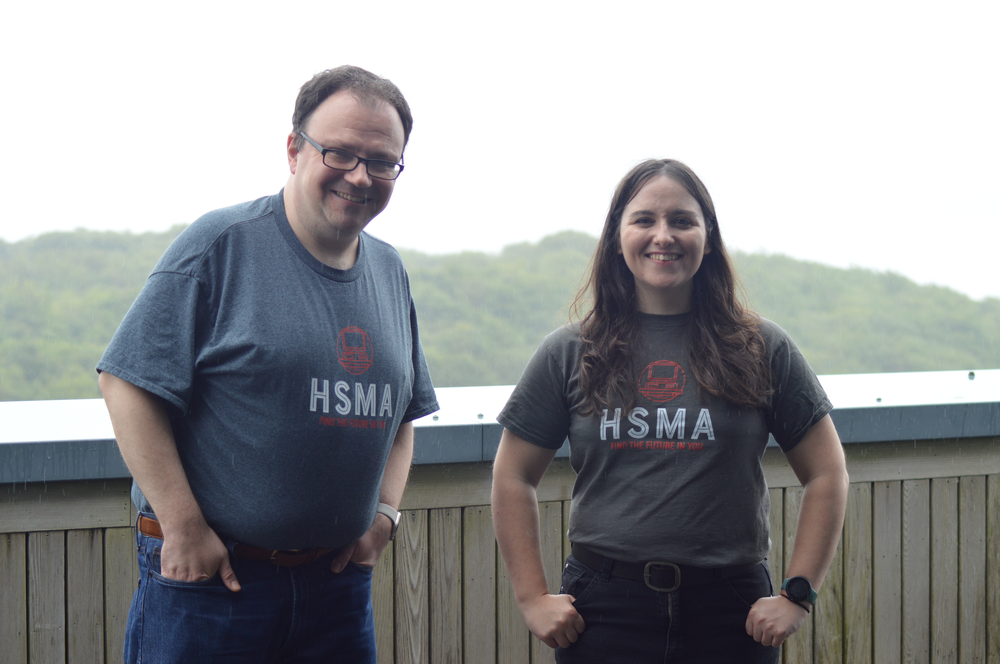
The HSMA programme is a 15 month online training and mentorship course delivered by Dr Daniel Chalk and Sammi Rosser, making training on advanced data science and operational research techniques available to people working in the NHS and other public healthcare organisations.
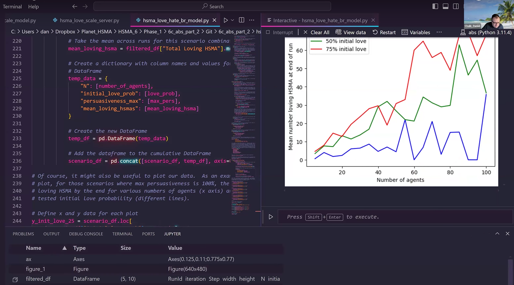
The course provides lectures, exercises, sample code and more for a diverse range of data science and operational research topics – all using the Python programming language or other free and open source tools. Non-participants can still access all of the course materials and recordings for free via this site!
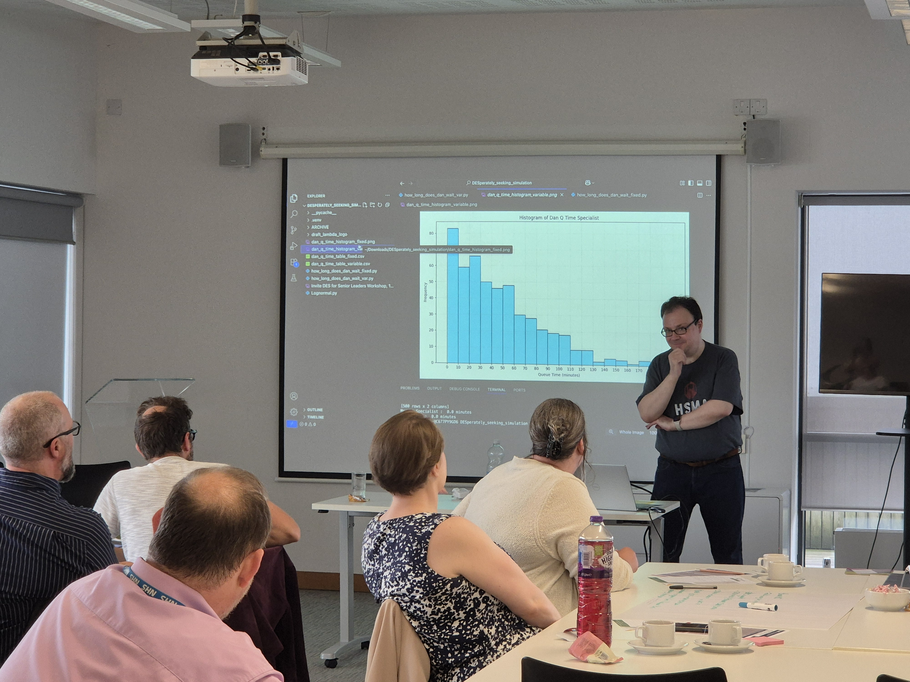
Conceived and run by Dr Daniel Chalk — an operational researcher with years of experience working on projects with healthcare services — and NIHR PenARC, HSMA is designed to build data science and operational research capacity within organisations so that those who know the data and services best are able to make the most of the data their organisations hold.
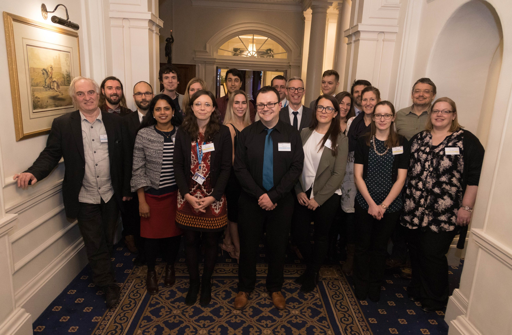
The HSMA programme has supported over 400 people since its inception in 2016, helping analysts, clinicians, service managers and more to produce transformational data projects in their organisations. HSMA projects have led to the building of new wards, the setup of dedicated data science teams, and much more. HSMA can help you to understand and communicate the power of operational research and data science techniques in your organisations – and start doing the work yourself.
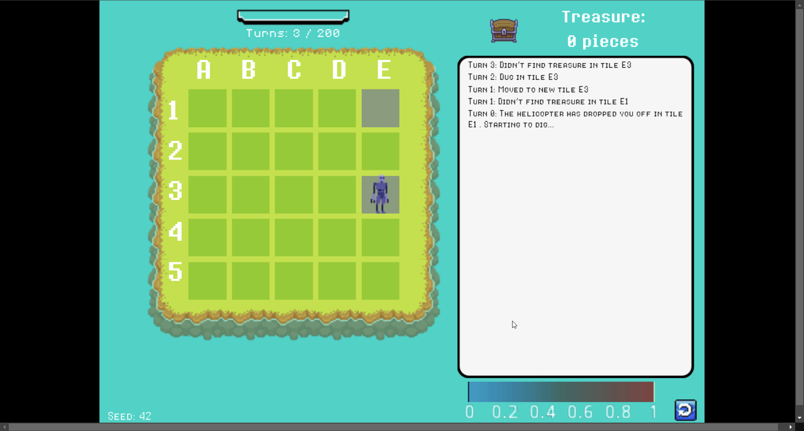
With bespoke games, countless references to the 1980s, retro computing and more, HSMA is designed to be a fun, friendly space in which to learn the serious stuff.
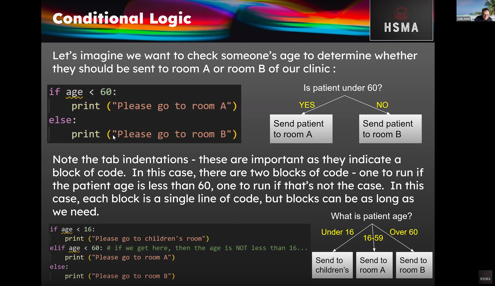
The course provides everything you need to get started, including teaching the Python programming language from scratch.
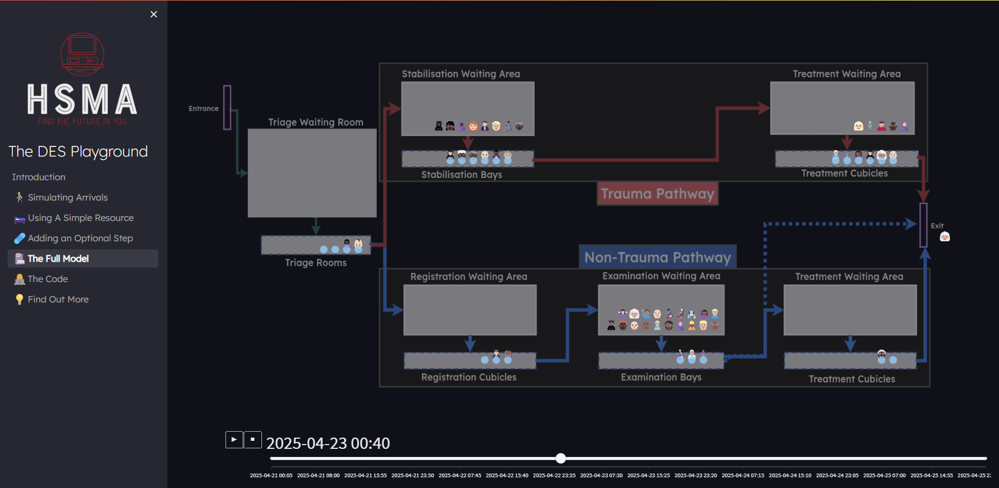
HSMA teaches simulation modelling, a powerful technique for improving pathways, reducing delays and better managing demand and capacity.
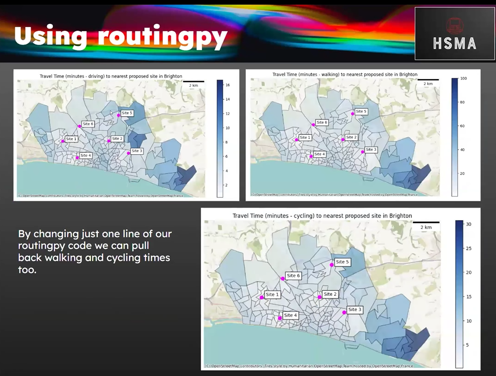
There is also extensive coverage of geographical modelling and site location optimization, with the syllabus throughout HSMA reflecting the real-world challenges the lecturers have faced in implementing data science and operational research projects.
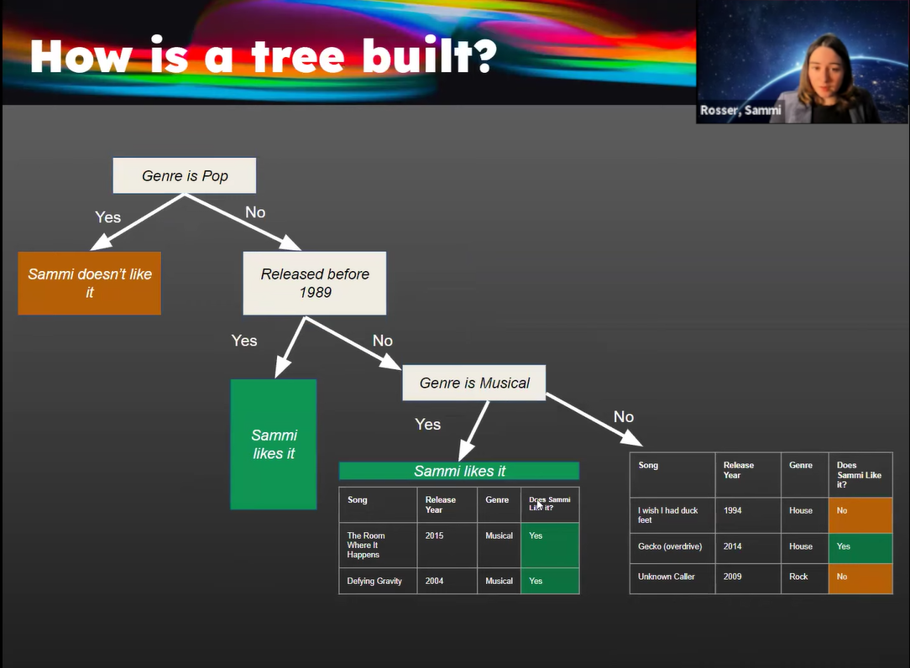
The course also includes extensive content on machine learning.
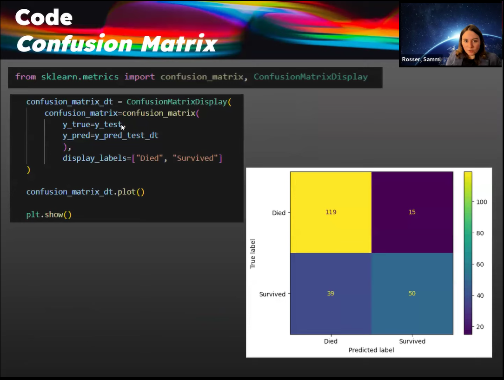
There is a strong focus on ethics and checking the performance of your models to ensure real-world value…
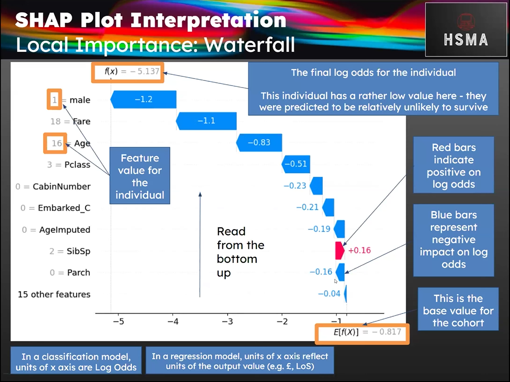
…as well as on cutting-edge techniques for explaining how machine learning models reach their decisions.
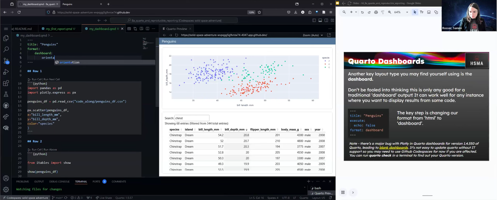
Aligning with the NHS’s focus on reproducible analytical pipelines, HSMA’s use of Python and dedicated content on reproducible outputs with Quarto and other tools can help individuals to get rid of repetitive, manual processes, reduce mistakes, and free up time for doing more advanced work.
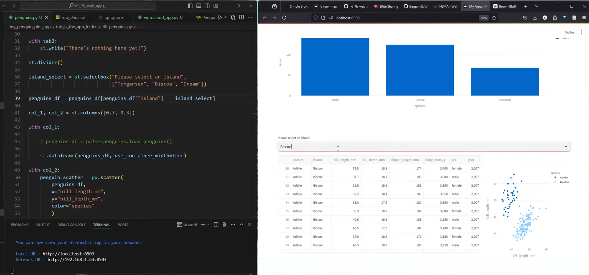
There is a strong focus on moving from concept to execution, with sessions covering the creation of dashboards, interactive web applications and other outputs that can help stakeholders engage with the powerful tools that are created without ever having to interact with the underlying code.
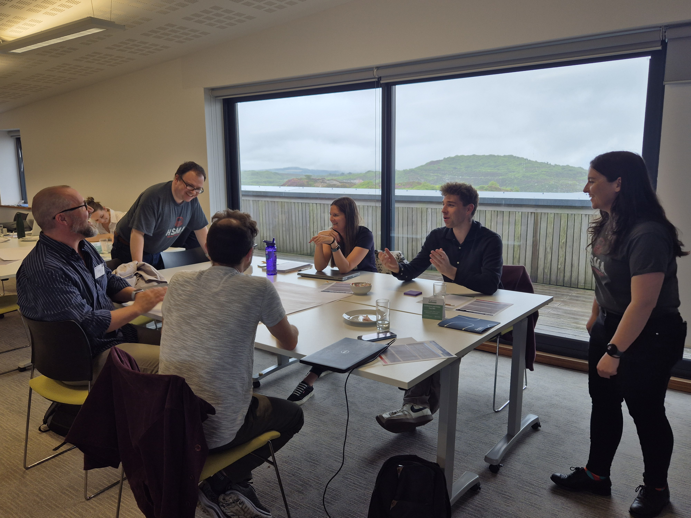
Being part of the HSMA community gives students a chance to gain expert advice from not only the lecturers, but a wider community of operational researchers, data scientists, and programme alumni. Students gain a valuable opportunity to network with like-minded people from across the country, forging links across organisations and sectors.
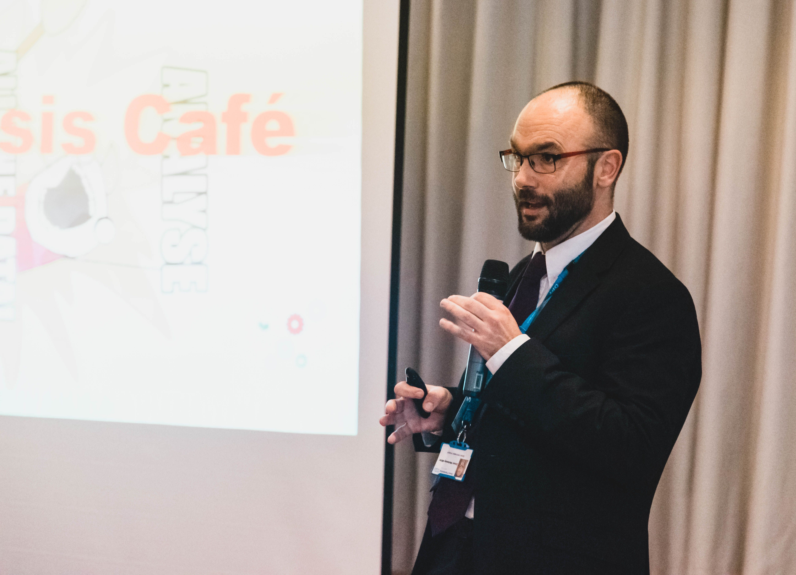
Students are given the opportunity to present their project work to a large audience of their peers and people from the wider world of health, policing and social care, encouraging the wider reuse of project work created on the programme.
> Updates from the HSMA team
Spring/summer 2027
HSMA 7
We're busy giving HSMA its biggest rewrite since the programme began ten years ago. A sneak peek at what's new:
Simulation content expanded from 9 to 30+ hours
Brand new content on simulation visualisation and advanced location optimisation
Cost analysis to evidence your project's impact
New phases for project planning and implementation
We are also putting together a new series of three standalone 3-hour workshops for senior leaders and decision makers in the health service:
Simulation Modelling for Pathway Problems
Location Optimisation for Equity and Efficiency
Machine Learning for Operational Improvements
Workshops focus on understanding the advanced techniques taught on HSMA, empowering participants to ask the right questions and interpret project outputs. No prior experience in mathematics, data science, operational research or programming is needed.
Overall, my HSMA journey has been a transformative experience, opening me up to new approaches to analytics in the NHS. I found the real-world problem-solving expertise and the community support invaluable. From an organisational perspective, it’s a strategic investment in operational service development and decision-making ability.
HSMA is an absolutely amazing programme that's taken me from zero coding knowledge to inspiring me to want to go off and explore on my own.
I can honestly say it is the best training I've ever participated in. For the first time in a long time I feel really enthused about my work.
The HSMA community is just wonderful - really friendly, open and collaborative. The teaching was well paced and I was made to feel like there were no silly questions. As a complete code novice, I really appreciated it!
The wealth of information and resources made available to me from this course will continue to be used for years.
Since completing the HSMA programme, I’ve found myself coding a lot more in my day-to-day role, which has really improved both the efficiency and depth of my work.
It’s also shifted how I approach problem-solving. I now think more analytically and am more confident in exploring data-driven solutions.
This is by far the most enjoyable course I've undertaken in this career to date.
Our Materials
Whether you are an alumni, current participant, or someone who is looking to learn data science and operational research on your own, you can access all our materials.
While HSMA involves a large training element, the main focus of the programme is to support participants to undertake their own projects in their organisations.